＝h
/2π
。）
＝h
/2π
。）本章我们将讨论波动观点与粒子观点之间的关系。由上一章我们已经知道，波动观点和粒子观点都欠正确。通常，我们总是力图准确地描述事物，至少也要做到足够精确，当我们的学习更深入时无须改变这种描述——它可以扩充，但却不会改变！然而，当我们打算谈及波动图像或粒子图像时，两者都是近似的，并且都将改变。所以，从某种意义上来说，我们在这一章中所学习的东西并不是很精确的；这里的论证是半直觉的，我们将在以后使之更为精确，但是，当我们用量子力学作出正确解释时，有一些事情将会有一点改变。我们这样做是为了在深入到量子力学的数学细节之前使你得到一些量子现象的定性感觉。而且，我们所有的经验都是关于波的和关于粒子的，因此，在我们知道量子力学振幅的完整数学描述之前，先应用波动和粒子的概念来得到一定场合下所发生的事情的理解是颇为方便的。我们在这样做时将力图阐明那些最薄弱的环节，但是其中大多数还是相当接近于正确的——这只是解释的问题。
首先，我们知道量子力学中描述世界的新方法——新的框架——是给每个可能发生的事件一个振幅，而且如果此事件涉及到接收一个粒子，那么就给出在不同位置与不同时间找到该粒子的振幅。于是，找到该粒子的概率就正比于振幅绝对值的平方。一般地讲，在不同场所与不同时刻找到粒子的振幅是随着位置和时间而变化的。
在某些特殊情况下，振幅在空间与时间中像ei（ωt －k ·r ） 那样呈正弦式变化，其中r 是从某个原点起算的矢量位置。（别忘了这些振幅是复数，不是实数），这样的振幅按照确定的频率ω 和波数k 变化。结果发现这对应于一种经典的极限情况，我们可以认为在此情况中有一个粒子，它的能量E 为已知，并且与频率之间的关系是
而且粒子的动量p 亦是已知的，它与波数k 之间的关系是
（符号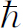
表示数h
除以2π
，即
＝h
/2π
。）
这意味着粒子的概念受到了限制。我们如此经常使用的粒子的概念——它的位置，它的动量，等等。从某些方面说来已不再令人满意了。比如，假设在不同的位置上找到一个粒子的振幅由ei （ωt －k ·r ）给出，则其绝对值的平方是常数。而这就意味着在所有的点上找到粒子的概率都相等。这就是说，我们不知道粒子究竟在何处 ——它可以在任何地方——粒子的位置是非常不确定的。
另一方面，如果一个粒子的位置比较确定，我们可以相当准确地预测到，那么在不同位置上找到它的概率必定限制在一定的区域内，我们令其长度为Δx 。在此区域之外概率为零。由于这个概率是某个振幅的绝对值的平方，如果绝对值的平方为零，则振幅亦为零，于是我们就有一个长度为Δx 的波列（图2-1），此波列的波长（波列中波的相邻波峰或相邻波谷之间的距离）就对应于该粒子的动量。 (1)
图2-1 长度为Δx 的波包
这里我们遇到了有关波动的一件奇妙的事情；一件很简单的、严格说来与量子力学毫无关系的事情。任何人，即使完全不懂量子力学，只要他研究过波的话就会知道：对一个短的波列 ，我们不可能定义一个唯一的波长 。这样的波列没有 一个确定的波长；存在着与有限的波列长度相关联的波数的不确定性，从而在动量上也就存在着不确定性。
现在我们来考虑这一概念的两个例子——即看一下如果量子力学是正确的话，为什么存在着位置与（或）动量的不确定性的理由。在前面我们已经看到，如果事情不是这样——即如果有可能同时测定任何东西的位置与动量——我们就会遇到一个佯谬；幸而这样一种佯谬并不存在，由波动图像中可以自然地得出不确定性这一事实表明，一切都很协调。
这里有一个很容易理解的例子，表明某一情况中位置与动量之间的关系。假设我们有一个单缝，一些具有一定能量的粒子从很远的地方飞来——所以它们实际上全都水平地飞来（图2-2）。我们将集中注意动量的垂直分量。从经典的意义上，所有这些粒子都具有一定的水平动量，譬如说p 0 。所以，从经典意义上说，粒子穿过狭缝前的垂直动量p y 是确定知道的。图中粒子既不向上，也不朝下运动，因为它来自很远的地方——当然它的垂直动量就是零。现在我们假设这个粒子通过宽度为B的狭缝。当它从狭缝穿出后，我们就以一定的精确度，即±B (2) ，知道它的垂直位置——y 坐标数值。这就是说，在位置上的不确定量Δy 为B 的数量级。现在我们也许想说，由于已知动量是绝对水平的，因而Δp y 是零；但这是错的。我们曾原来 知道动量是水平方向的，但是现在再也不知道了。在粒子穿过狭缝前，我们不知道它们的垂直位置。由于粒子穿过了狭缝，现在我们就发现它的垂直位置，但却失去了该粒子垂直动量的信息！为什么？按照波动理论，当波通过狭缝后就会散开或衍射，像光那样子。因此有一定概率，粒子出狭缝后，不严格笔直地飞行。由于衍射效应，粒子出射的图样散开，其弥散角（我们可将它定义为是第一极小值的张角）就是对粒子出射的最后角度的不确定性的一种度量。
图2-2 穿过狭缝粒子的衍射
图样是怎样弥散开的呢？所谓弥散开就是说粒子有一定的往上或往下运动的机会，也就是说，其动量出现向上或向下的分量。我们说机会 与粒子 是因为可以用一个粒子计数器检测出这个衍射图样，而且当计数器在譬如说图2-2的C处接收到粒子时，接收到整个 粒子，这样，从经典意义上来说，粒子要从狭缝射出往上偏至C处，就得具有垂直的动量。
为了对动量的弥散有一个大致的概念，垂直动量p y 的弥散等于p 0 Δθ ，这里p 0 是水平动量。那么在弥散开的图样中Δθ 有多大？我们知道第一极小值出现在Δθ 角上，这时，从狭缝的一个边缘处传出的波必定比从另一边缘传出的波多走过一个波长——我们以前已得出这个结论（第1卷第30章）。因此Δθ 为λ /B ，这样，此实验中的Δp y 就是p 0 λ／B 。注意：如果将B 做得更小，亦即对粒子的位置做更为准确的测量，那么衍射图样就变宽。所以，狭缝做得越窄，衍射图样就越宽，而我们发现粒子具有侧向动量的可能性就越大。这样，垂直动量的不确定量就与y 的不确定量成反比。事实上，我们看到两者的乘积为p 0 λ 。但是λ 是波长，p 0 是动量，按照量子力学，波长乘以动量就是普朗克常量h 。因此我们得到下列规则：垂直动量的不确定量与垂直位置的不确定量的乘积约为h 的量级：
我们不可能造出这样一个系统，在其中既知道粒子的垂直位置，又能以比式（2.3）所表示的更大准确性来预知它的垂直运动。这就是说垂直动量的不确定量必须超过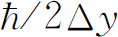 ，这里Δy 是我们的位置的不确定量。
有时，人们说量子力学是完全错误的。当粒子从左边飞来时，它的垂直动量是零。现在它穿过了狭缝，它的位置也就知道了。位置与动量两者看来都能以任意高的精确度知道。完全正确，我们可以接收一个粒子，在接收时确定它的位置，以及确定为了到达那里原来应具有多少动量。这些都完全正确，但这并不是不确定关系式（2.3）所谈的事。式（2.3）所说的是对一种状况的可预知性 ，而不是对于过去 的评述。“我知道粒子穿过狭缝前的动量是多少，现在又知道它的位置”这种说法没有什么意思，因为我们现在已失去了关于动量的知识。粒子通过了狭缝这一事实已使我们不再能预言垂直动量。我们所谈的是一种预言性的理论，而不只是一种事后的测量。所以我们必须谈论能够预料的事。
现在我们从另一个角度来看一下。我们更为定量地考虑同样现象的另一个例子。在上一个例子中，我们曾以经典方法测量了动量。那就是说，我们考虑了方向、速度和角度，等等，所以是用经典分析得出动量。然而，由于动量与波数有关，所以自然界中还有另一种测量粒子（光子或其他粒子）动量的方法，它没有经典的类比，因为它利用的是式（2.2）。我们测量波的波长 。我们试用这种方式来测量动量。
假设有一个有大量刻线的光栅（图2-3），并且将一束粒子射向此光栅。我们已屡次讨论过这样一个问题：如果粒子具有确定的动量，那么，由于干涉，我们会在某个方向上得到一个十分锐细的图样。我们也讨论过在测量动量时可以精确到什么程度，也就是说，这样的光栅分辨率有多大。我们不拟再作一次推导，而只是参考第1卷第30章的结果，在那里已经得出用一个给定的光栅能够测出的波长的相对不确定量为1/Nm ，其中N 是光栅刻线数，m 是衍射图样的级数，亦即
图2-3 利用衍射光栅确定动量
现在式（2.4）可以改写为
这里L 是图2-3中所示的距离。这段距离是粒子或者波，不论它是什么，从光栅底端反射后必须跑过的总路程与它们从光栅顶端反射后必须跑过的总路程的路程差。也就是说，形成衍射图样的波来自光栅的不同部分。首先到达的波是来自光栅底端的波列的起始部分，该波列的其余部分依次通过。随着来自光栅不同部分的波列也先后到达。最后到达的是来自光栅顶端的波列，它的起始部分与最先到达的（来自光栅底端的）波列上距离其起始端长度为L处的波动相遇。 (3) 所以为了在我们的光谱中得到一条与一定的动量对应的锐细谱线，其不确定量由式（2.4）给出，我们必须有一列长度至少为L 的波列。如果波列太短，我们就没有用到整个光栅。波列太短的话，形成光谱的波只是从光栅的很小一块面积上反射的波，光栅的作用没有很好发挥——我们将得到很大的角宽度。为了得到较窄的光谱线，我们必须利用整个光栅，这样至少在某些时刻所有波列都是同时从光栅的所有部分散射出来。因此为了使波长的不确定量小于式（2.5）所给出的值，波列的长度必须为L 。顺便说一下，
因此
这里L 是波列的长度。
这意味着，如果有一长度小于L 的波列，那么在波数上的不确定量必然超过2π /L 。或者说波数的不确定量乘以波列的长度——暂时我们称之为Δx ——将大于2π 。我们之所以称波列长度为Δx 是因为这是粒子在位置上的不确定量。如果波列长度有限，那么，这就是说我们能在不确定的范围Δx 以内找到粒子。波的这种性质，即波列的长度乘以相应波数的不确定量至少为2π ，是每个研究波的人都知道的，这与量子力学毫无关系。这只是说，如果我们有一长度有限的波列的话，没有办法很精确地数出波的数目。
我们试从另一途径来看看其中的道理。假定我们有一有限长度为L 的波列；那么，由于它在两端必定减弱（如图2-1所示），所以在长度L 中波的数目是不确定的，可能相差±1。但在长度L 中的波的数目是kL /2π 。可见k 是不确定的，我们又重新得出式（2.7）的结果，它只是波的一种性质。无论波是在空间传播，k 是每厘米的弧度数，L 是波列的长度，还是波在时间上展开，ω 是每秒的振动数，T 是到达的波列持续的时间“长度”，都是同样的情况。这就是说：如果只是持续一定的有限时间T 的波列，那么频率的不确定量则由下式确定：
我们已经着重指出，这些都只是波的性质，例如，在声学理论中就已为人们所熟知了。
问题在于，在量子力学中，我们将波数解释为按照公式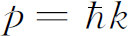 对粒子动量的一种量度，这样，式（2.7）就告诉我们Δp ≈h /Δx ．因此，这就表明了经典动量概念的适用极限。（显然，如果我们想用波来表示粒子的话，动量的概念必定受到某种限制！）我们发现了一条规则，给了我们经典概念何时失效的一些观念，这是件很好的事情。
下面，我们考虑粒子波在晶体上的反射。晶体是一块厚厚的东西，它整个由排列成很整齐阵列的相同原子组成——我们将在后面讨论一些较复杂的情况。问题是对于一束给定的光（X射线）、电子、中子、或者别的东西，怎样安置原子阵列才能在某个给定方向上得到强的反射极大值。为了得到强的反射，来自所有原子的散射都必须同相位。同相波的数量和反相波的数量不能相等，不然波会相互抵消掉。正如我们已经说明过的那样，解决这个问题的方法是找出等相位的区域；它们就是一些对入射方向和反射方向成相等角度的平面（图2-4）。
图2-4 晶面对波的衍射
考虑图2-4中两个平行平面，如果从这两个平面散射的波的波前传播距离之差为波长的整数倍，则散射波的相位相同。可以看出，距离差为2d sinθ ，这里d 是两平面间的垂直距离。于是相干反射的条件是
比方说，如果晶体中原子刚巧处在遵从式（2.9）中n ＝1条件的平面上，那么就会出现强反射。然而，如果有性质相同（密度相同）的其他原子位于原来原子的中间，这些中间平面的散射也同样强，就会与其他的散射相互干涉，致使总效果为零。所以式（2.9）中的d 必须指相邻 平面的距离；我们不能对两个相距五层的平面来应用这个公式！
有趣的是，实际的晶体通常并不那么简单，即只是以一定方式重复排列的同一类原子。假如我们作一个二维类比的话，它们更像印满了重复某种图形的墙纸。对原子来说，所谓“图形”就是多个原子的某种排列，例如，碳酸钙的图形包含有一个钙原子、一个碳原子和三个氧原子等等，也可能包含相当多的原子。但不管是什么，这些图形都按一定的形式重复构成图案。这种基本图形就称为晶胞 。
重复的基本图形决定了我们所称的晶格类型 ；通过观察反射光束并找出它们的对称性，就能立即确定晶格类型。换句话说，只要找到各个反射点，就可确定晶格类型，但是为了确定晶格的每个单元的组成，就必须考虑各个方向上的散射强度 。向哪 个方向散射取决于晶格的类型，但每一束散射光有多强则由每个晶胞内有些什么来决定 (4) 。晶体的结构就是用这种方式得出的。
图2-5和图2-6是两幅X射线衍射图样的照片，它们分别是从岩盐与肌红蛋白的散射的衍射图。
附带提一下，如果最靠近的两个平面间的距离小于λ /2，就会发生一件有趣的事。在这种情况下，式（2.9）对n 就没有解。因此，如果λ 大于相邻平面之间距离的两倍，就没有侧向衍射图样，光——或者无论它是什么——将直接穿过材料，而不被弹开或损失。所以，对于（可见）光，λ 远大于间隔的情况下，它就直接通过，而不会出现从晶体中平面反射的图样。
| 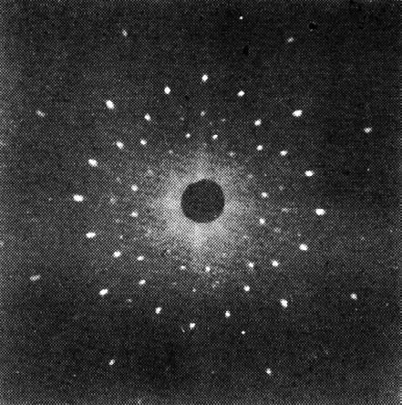 | 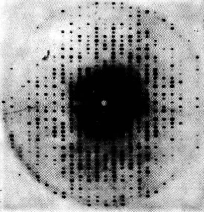 |
| 图2-5 由一束X射线射在氯化钠晶体上衍射得到的图样 | 图2-6 肌红蛋白的X射线衍射图样 |
这个事实在产生中子的核反应堆情况下也引起有趣的结果（中子显然是粒子，任何人都这样认为！）。假如我们引出这些中子使它们进入一厚石墨块，它们就会扩散，并且奋力地穿过石墨（图2-7）。它们之所以扩散是因为被原子弹开，但严格地说，按照波动理论，它们之所以被原子弹开是由于晶体内许多平面的衍射。结果表明，假如我们取一块厚石墨块的话，从远端跑出的中子都有长的波长！事实上，假如我们把中子强度作为波长的函数作图的话，除波长大于某个极小值外其余什么也没有（图2-8）。换句话说，我们可以用这种方法得到极慢的中子。只有最慢的中子才会通过；它们没有被石墨的晶格平面所衍射或散射，而是像光通过玻璃一样径直穿过石墨而没有向两边散射开去。还有许多其他证据也说明中子波和别的粒子波是真实的。
| 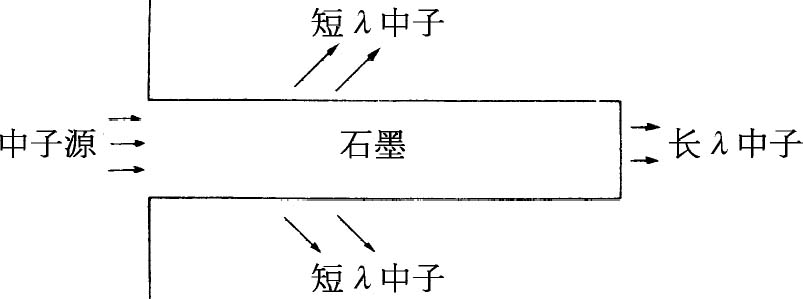 | 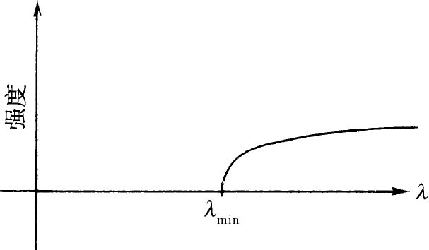 |
| 图2-7 反应堆中子通过石墨块的扩散 | 图2-8 从石墨棒出来的中子强度与波长的关系 |
现在我们来看一下不确定性关系式（2.3）的另一个应用。在这里不用过分严密；概念是正确的，但所作的分析并不很精确。这个概念涉及到确定原子的大小，以及按经典理论电子将不断辐射光并作螺旋运动直至最后落到原子核上这一事实。但是这在量子力学中就不是这样，假如是这样的话我们就可以同时知道每一个电子在什么地方以及它运动得有多快。
假定我们有一个氢原子，并且要测量电子的位置；我们肯定不能精确地预言电子的位置，不然动量将会扩展到无限大。每当我们观察电子时，它是在某处，但它在各个不同地方都有一定的振幅，因而在不同地方都可能找到它。这些位置不可能全都在原子核附近，我们假定位置有一定的扩展，其数量级为a 。这就是说，电子离原子核的距离通常大约为a 。我们对原子的总能量取极小值来确定a 。
由于不确定性原理，动量的弥散约为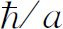 ，这样，如果我们打算用某种方式去测量电子的动量，譬如使它散射X射线，然后观察运动散射体引起的多普勒效应，那么可以预期并不会每次都得到零——电子并不是静止不动的——但它的动量一定为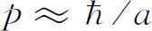 的数量级，于是动能约为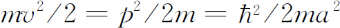 。（在某种意义上，这是一种量纲分析，用以找出动能是以何种方式依赖于约化普朗克常数，质量m ，以及原子的大小a 。我们毋需顾虑答案中2、π 等这类因子上的出入。我们甚至还没有很精确地定义过a 。）现在，势能为－e 2 除以离原子中心的距离，即－e 2 /a 。按第1卷中的定义 (5) ，这里的e 2 是电子电荷的平方除以4πε 0 。要点就在于，如果a 变小，势能就变小，但a 越小，由于不确定性原理，要求动量增大，因而动能也增大。总能量是
我们不知道a 有多大，但我们却知道原子本身会进行调整以取得某种折衷办法使能量尽可能地小。为了得到E 的极小值，我们求E 对a 的微商，令此微商等于零后解出a 。E 的微商是
** 计算（2.11）和（2.12）式时，e 2 要代入e 2 /4πε 0 ＝（1.602×10－19 库仑）2 ×8.99×109 牛顿·米2 ／库仑2 。——译者注
令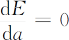 ，求得a 值为
这个特殊的距离称为玻尔半径 。我们因此得知原子的大小约为埃的数量级，这完全正确。这是一件挺不错的事——实际上，是令人惊奇的，因为到现在为止，我们还没有理解原子大小的基础！从经典的观点来看，由于电子会螺旋式地运动终至落到原子核上，原子完全不可能存在。
现在，如果将式（2.12）的a 0 值代入式（2.10）求能量，结果得出
负能量意味着什么？这意味着，当电子在原子中时的能量比自由状态下的能量小。这意味着它是受束缚的。也就是说，要把电子“踢出去”需要能量；要电离一个氢原子大约需要13.6eV的能量。我们没有理由认为所需的能量不是这个值的2倍、3倍——或它的一半，或1/π ，因为我们这里所用的是十分粗略的论证。然而，我们作了弊，我们这样引进所有常数，使得正好得出正确的数字！13.6eV这个数字称为一个里德伯（Rydberg）能量，它是氢原子的电离能。
所以，我们现在懂得了为什么不会穿过地板掉到下面去。当我们行走时，鞋子中的大量原子带着原子的质量挤压着地板中的原子。为了把原子挤得更靠近一些，电子就要被限制在一个更小的空间中，按照不确定性原理，平均而言它们的动量将变得更大些，这就意味着能量变大；抵抗原子压缩的是一种量子力学效应，而不是经典效应。按照经典的观点，如果使所有电子与质子更为靠近，我们应预期能量会进一步降低，因此，在经典物理学中，正电荷与负电荷的最佳排列就是互相紧靠在一起。这些在经典物理学中是很清楚的，但是由于原子的存在又令人困惑。当然，早先的科学家发明过一些办法来摆脱这个困境——不过不必担心，我们现在找到了一种正确 的方法！
顺便提一下，虽然眼下我们还不能理解它，我们发现在有许多电子的场合中，这些电子总是试图彼此离开。如果某个电子正占据着某一空间，那么另一个电子就不会占据同一空间。说得更精确一些，由于存在着两种自旋的情况，因此两个电子有可能紧靠在一起，一个电子沿一个方向自旋，而另一个电子则沿反方向自旋。但此后我们在该处再也不能放进更多的电子。我们必须把其他电子放到别的位置上，这就是物质具有强度的真正原因。假如我们有可能将所有电子放在同一个地方，那么它们将会比现在更为紧密。正是由于电子不可能全都紧靠在一起这个事实，才使得桌子和其他种种东西变得坚固。
十分明显，为了理解物质的性质，我们必须用量子力学，经典力学是不能满足的。
我们已讲过处在可能具有的最低能量状态下的原子，但是发现电子还可以做别的事，它能以更具活力的状态跳来跳去，因此原子可以有多种不同的运动状态。按照量子力学，在定态条件下，一个原子只可能有确定的能量。我们作一个图（图2-9），其中垂直方向标绘能量，每一个允许的能量值画一条水平线。当电子是自由的时候，这时它的能量为正，能量可以具有任意值，并能以任何速度运动。但是束缚能不能取任意值。原子只能取图2-9所示的一系列允许值中的某一个能量值。
图2-9 原子的能级图（表示几种可能的跃迁）
现在我们称这些能量的允许值为E 0 ，E 1 ，E 2 ，E 3 。如果原子原来处于E 1 ，E 2 等“激发态”之一时，它不会永远停留在这状态中。它迟早会掉到较低的状态中并以光的形式辐射出能量。发射的光的频率由能量守恒加上量子力学的光的频率与光的能量之间的关系式（2.1）来确定。因此，譬如说从能量E 3 到能量E 1 的跃迁所辐射的光的频率为
这就是该原子的一个特征频率，它确定了一条发射光谱线。另一可能跃迁是从E 3 至E 0 ，这时就得到不同的频率
另一个可能性是，如果原子已被激发到E 1 态，它可能掉回到基态E 0 ，发射光子的频率是
我们举出三种跃迁的情况是为了指出一个有趣的关系。由式（2.14），（2.15）和（2.16）很容易看出
一般来说，如果我们找到了两条谱线，可以预料在频率之和（或之差）处将找到另一条谱线，而且通过找到一系列能级，每条谱线都对应于其中的某一对能级的能量差，那么所有的谱线就能得到解释。在量子力学出现以前人们就已注意到这种在谱线频率惊人的对应，它称为里兹组合原则 。从经典的观点来看，这又是不可思议的。不过，我们别再唠叨经典力学在原子领域中的失败，看来我们已讲得足够多了。
前面已经谈到量子力学可以用概率幅来描述，概率幅的行为像具有一定的频率和波数的波动。让我们看一下，从振幅的观点怎样会得出原子具有确定的能量状态。根据我们前面所说过的那些是无法理解这一点的，但是我们都知道被约束的波具有确定的频率。例如，若声音约束在一个风琴管或任何类似的东西中时，声波振动的方式不止一种，但每种方式都有一个确定的频率。这样，将波约束在其中的物体有某些确定的共振频率。所以这是被约束在有限空间中的波的一种性质——这个课题我们将在以后详细地用公式来讨论——只能存在某些确定频率的波。由于振幅的频率与能量间存在着普遍关系，我们发现束缚在原子内的电子具有确定的能量就不足为奇了。
我们简单地谈谈量子力学的某些哲学含义。通常这种问题总是有两个方面：一个是作为物理学的哲学的含义，另一个是把哲学问题外推到其他领域。在把和科学有关的哲学观念引申到其他领域中去时，它们往往完全被歪曲了。因此我们将尽可能把自己的评论限制于物理学本身。
首先，最有兴趣的问题是不确定性原理的概念，观察影响现象。人们向来都知道进行观察要影响现象，但是问题在于，这种效应不可能依靠重新安排仪器使其可以忽略，或减到最小或任意减小。当我们观察某一定的现象时，不可避免地要产生某种哪怕是最低限度的扰动，这种扰动是观测的自洽性所必需的 。在前量子物理学中，观察者有时也是重要的，但这只是非本质的问题。曾经有人提出过这样的一个问题：如果有一棵树在森林中倒了下来，而旁边没有人听到，那它真的发出了响声吗？在真实 的森林中倒下的一棵真实 的树当然会发出声音，即使没有任何人在那里。但即使没有人在那里听到声音，它也会留下其他的迹象。响声会使树叶振动，如果我们够仔细的话，可以发现在某个地方有一些荆棘擦伤了树叶，在树叶上留下细小的划痕，除非我们假定树叶曾经发生振动，否则对此划痕就无法解释。所以，在某种意义上我们必须承认曾经发出过声音。我们也许会问：是否有过声音的感觉 呢？大概没有，感觉一定要意识到才有意义。蚂蚁是否有意识以及森林中是否有蚂蚁，或者树木是否有意识，这一切我们都不知道。对这个问题我们就谈到这里吧！
量子力学发展以来人们所强调的另一件事情是这样一个观念：我们不应当谈论那些我们不能够测量的事情（实际上相对论也这么说的）。如果一件事情不能通过测量来定义，它在理论上就没有地位。由于一个定域粒子的动量的精确值不能通过测量来确定，因此它在理论上就没有地位。但是，认为这是经典理论的问题是错误 的。这是一种对情况所作的粗枝大叶的分析。只是因为我们不能同时精确地测量 位置和动量并不是从先验 的意义上说我们不能 讨论它们。它的意思只是我们不需要 讨论它们。在科学中情况是这样的：一个无法测量或无法直接与实验相联系的概念或观念可以是有用的，也可以是无用的。它们不必存在于理论之中。换句话说，假如我们比较世界的经典理论与世界的量子理论，并假设实验上确实只能不精确地测出位置与动量，那么问题就是一个粒子的精确位置与它的精确动量的概念 是否仍然有效。经典理论承认这些概念；量子理论则不。这件事本身并不意味着经典物理是错误的。当新的量子力学刚发现时，经典物理学家——除去海森伯、薛定谔和玻恩以外所有的人——都说：“看吧，你们的理论一点也不好，因为你们不能回答这样一些问题：粒子的精确位置是什么？它穿过的是哪一个孔？以及一些别的问题。”海森伯的答复是：“我不用回答这样的问题，因为你们不能从实验上提出这个问题。”这就是说，我们不必 要回答这种问题。考虑两种理论（a）与（b），（a）包括一个不能直接检验但在分析中用到的概念，而（b）则不包括这个概念。如果它们的预言不一致，我们不能声称：由于（b）不能解释（a）中的那个概念，因而它就是错的，因为这个概念是一个无法直接检验的东西。知道哪些观念不能直接检验总是好的，但是没有必要将它们全部去掉。认为我们只利用那些能直接实验测定的概念才能真正算作科学的这种看法是不正确的。
量子力学本身就存在着概率幅、势以及其他许多不能直接测量的概念。科学的基础是它的预测 能力。预测就是说出在一个从未做过的实验中会发生什么。我们怎么去做这件事呢？假定我们不是依靠实验要知道发生什么情况，我们只能将已有的实验外推到实验尚未达到的领域。我们必须依据我们的概念并将它们推广到这些概念还没有受到检验的领域中。如果我们不是这样做，就不会提出预测。所以，对经典物理学家来说恰当地按照这样的程序进行是完全合理的，从而假设位置——对垒球来说显然具有某种意义——对于电子来说也具有某种意义。这并不愚蠢。这是合理的步骤。今天我们说相对论定律对所有的能量都应该是正确的，但是或许有一天，有人会跑出来说我们是多么愚蠢呀！直到我们自己惹出麻烦之前，我们实在是不知道“蠢”在哪里的，所以整个思想都是自找麻烦。唯一能发现我们错误的方法是说出我们的预测是什么 。这对于建立概念是绝对必要的。
我们已对量子力学的非决定性作过一些评论。那就是我们现在还不能预测在给定尽可能仔细安排好的物理条件下会发生什么物理事件。假如有一个处于受激态的原子，并且它将发射光子，那么我们无法说出它将在什么时候 发射光子。它有在任何时刻发射光子的一定振幅，我们可以预测的只是发射的概率；我们不能精确地预测未来。这引起了关于意志自由的意义的种种问题和胡说八道，还引起了世界是不确定的种种观念。
当然，我们必须强调，在某种意义上经典物理也是非决定的。人们通常认为这种非决定性，即我们不能预言未来，是重要的量子力学的特色，而且据说这可用来解释精神的行为、自由意志的感觉等等。但是假如世界真的是 经典世界——假如力学定律是 经典的——还是一点也不清楚精神是否也觉得多少有些相同。确实，在经典物理学中如果我们知道了世界上，或者在一盒气体中的每个粒子的位置与速度，那么就能精确地预言会发生什么。因此经典的世界是决定论的。然而，考虑到我们的精确度有限，而且不知道哪怕只是一个原子的精确 位置到譬如十亿分之一。那么这个原子运动时会撞上另一个原子，由于我们知道的位置的精确度不超过十亿分之一，因此我们发现在碰撞后，位置的误差还会更大。当然，在下一次碰撞时，误差又被放大，这样，如果起先只有一点点误差的话，后来就迅速放大而出现很大的不确定性。举个例子来说：比如一道水流从堤坝上泻下时，会飞溅开来。如果我们站得很近，时不时地有水滴溅到我们的鼻子上。这一切看来完全是无规则的，然而这样一种行为能够按纯粹的经典定律来预言。所有水滴的精确位置取决于水流流过堤坝以前的精确运动。结果怎样呢？在水流落下时，极微小的不规则性都被放大了；结果就出现了完全的随机性。很明显，如果我们不能绝对精确 地知道水的运动，就不能真正预知水滴的位置。
说得更明确一些，给定任一精确度，无论多么精确，都能找到一个足够长的时间，以致我们无法使对这么长的时间作出的预言有效。问题在于这段时间并不很长。如果精确度为十亿分之一，这个时间并不是数百万年。事实上，这个时间随着误差呈对数式地变化，结果发现只在非常、非常短的时间里我们就丢失了所有的信息。如果精确度提高到亿亿亿分之一——那么不管我们想要多少个亿，最后总要停在某一位数上——我们就会得出一个时间，小于这个时间的事件都在已有测量的精度下是可预言的——此时间后发生的事件就再也不能预言了！由此看来，诸如以下的说法，什么由于人类精神表面上的自由与非决定性，我们应当认识到再也不能希望用经典的“决定论的”物理学来理解它，并且欢迎量子力学将我们从“完全机械论的”宇宙下解放出来，等等，都是不公正的。因为，从实际的观点来说，在经典力学中早已存在着非决定性了。
————————————————————
(1) 原文为the distance between nodes of the waves in the train。其中用nodes不恰当，故略加修改。——译者注
(2) 更精确地说，我们所知的y 坐标的误差是±B /2。但是我们现在只对一般的概念感兴趣，所以不必为因子2操心。
(3) 原文这几句话表达含糊，曾经译者重新整理，补充。——译者注
(4) 光斑组成的整个衍射图的强度分布决定于每个晶胞的结构。——译者注
(5) 第1卷28章和第2卷第4章。——译者注